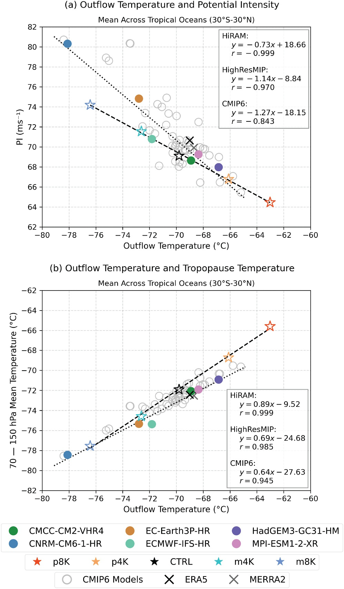
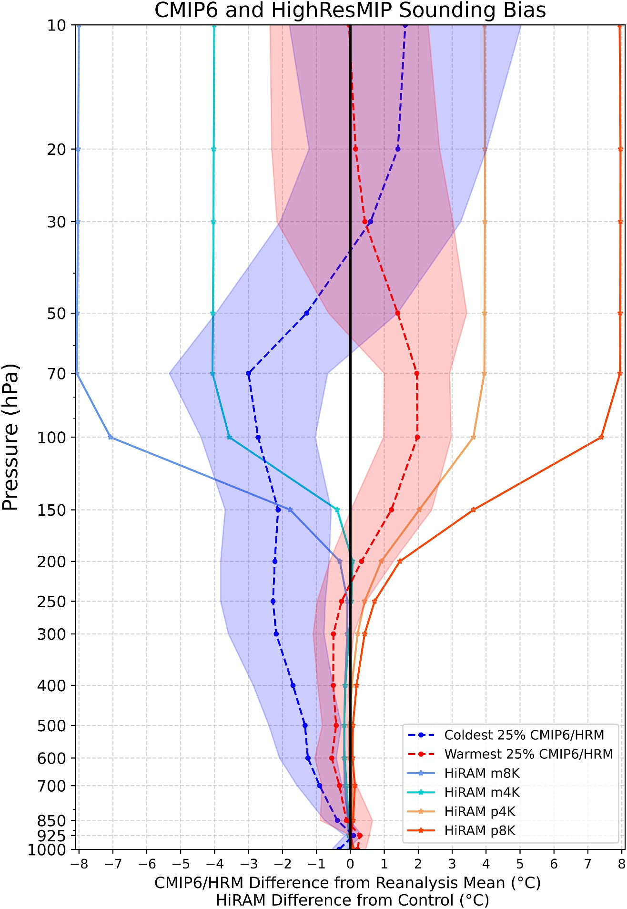
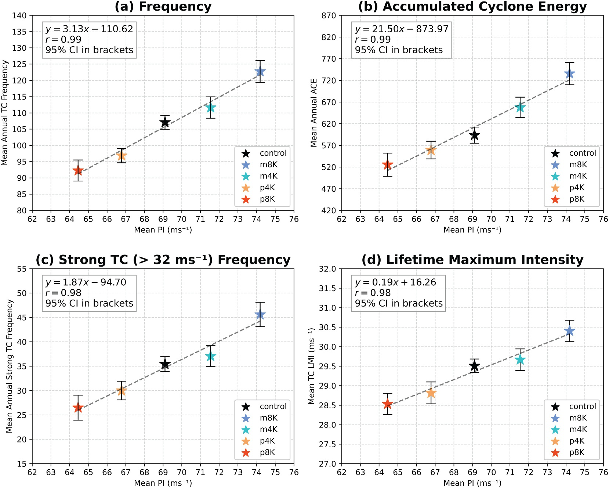
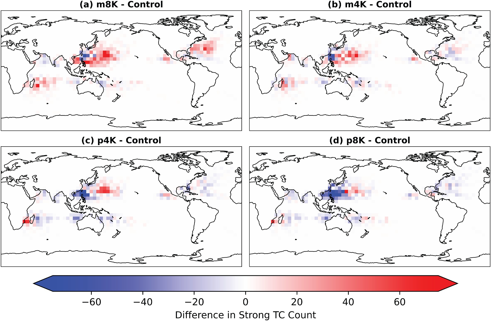

~35%
Global TC frequency and ACE shifts in perturbation experiments
Geophysical Research Letters (2026)
Idealized profile perturbations demonstrate that upper-atmosphere temperature biases shift outflow temperature, alter PI, and strongly affect simulated TC frequency and ACE.
~35%
Global TC frequency and ACE shifts in perturbation experiments
~80%
Change in hurricane frequency linked to upper-atmosphere thermal biases
PI Spread
Potential-intensity spread is strongly tied to 70-150 hPa thermal structure
Paper Citation
Mahoney, A. D., B. J. Soden, B. Zhang, et al., 2026: The Influence of Tropopause Temperature Biases on Climate Model Simulations of Tropical Cyclones. Geophysical Research Letters. https://doi.org/10.1029/2025GL120545
How much of the intermodel spread in tropical cyclone potential intensity and activity can be explained by biases in tropopause and lower-stratospheric temperatures under the same SST forcing?
Extracted from Mahoney et al. (2026), https://doi.org/10.1029/2025GL120545.
Figure 1 (Extracted)

Figure 2 (Extracted)

Figure 3 (Extracted)

Figure 4 (Extracted)
